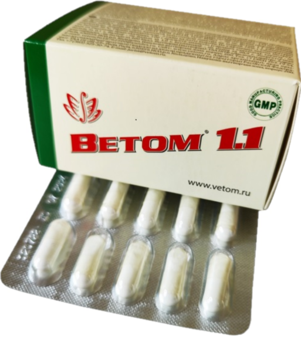

Ветом 1.1 (капсули), биостимулатор

Цена - 50 лв/бр 25€/pz
Капсула-желатин,съдържание: царевичен екстракт,
картофено нишесте, захароза, комплекс.
Дневна доза в (3 капсули): царевичен екстракт – 399 мг;
картофено нишесте- 300 мг; захароза(пудра захар) – 201 мг;
суха култура на пробиотични микроорганизми Bacillus subtilis,
щам ВКПМ В-10641 (DSM 24613) 1х10 на 9 степен КОЕ/г – 90 мг
(КОЕ – колонообразуващи единици).
Индивидуална непоносимост към компонентите, бременност и кърмене.
Внимание:!! Ветом не е заместител на разнообразното хранене.
Да се пази от деца. Да се съхранява при относителна
влажност не повече от 75% и температура на въздуха
не повече от 30оС.
Срок на годност – 2 години след
датата на производство, указана на опаковката.
Една опаковка съдържа 50 капсули с тегло по 0,33гр.
Ветом 1.1 се прилага перорално.
Честотата на вземане на Ветом 1.1 е пряко
зависимо от състоянието на човешкото тяло.
При здрави хора препоръчителната доза на приемане
е най-малко (2-3) дози на ден, в продължение на 10 дни.
Честота на всеки един/три/шест месеца.
При наличие на заболяване, честотата на приемане трябва
да бъде увеличена до 5 дози на ден в продължение на 10 дни .
След това можете да приемате Ветом 2 ил др. от серията.
Преди това е препоръчително да вземете Ветом 3 или
Ветом 4 според указанията, в зависимост от вашето предпочитание!
Допускат се комбивации между Ветом 4 (Ветом 2 или Ветом 3) и
Ветом 1.1. Не предизвиква пристрастяване.
1 доза = една капсула (0.33 g).
Ветом 1.1 не е лекарствено средство!!!
50 капсули в кутия!
Цена за един брой - 50 лв.

Ефектът се осигурява от свойствата на бактерията Bacillus subtilis,
които размножавайки се главно в дебелото черво,
отделят биологично активни вещества, които потискат растежа
и развитието на патогенна и опортюнистична микрофлора.
Така че, в резултат на този процес микробният състав на червата се
трансформира в съответната еволюционна норма,
стените му се почистват от несмилаеми остатъци от храна,
което допринася за активното отстраняване на токсините от тялото,
безпрепятственото доставяне на биологично активни и хранителни вещества .
Под влиянието на Vetom 1.1 се нормализират: метаболизъм,
храносмилане и усвояване на биологично активни хранителни
компоненти в стомашно -чревния тракт.
Област на приложение
Препоръчва се като биологично активна хранителна добавка
като допълнителен източник на пробиотични микроорганизми
за подобряване на функционирането на стомашно -чревния тракт
и възстановяване на чревната микрофлора.
Bacillus subtilis щам ВКПМ В-10641 Ефектът се осигурява от свойствата на бактерията Bacillus subtilis,
които размножавайки се главно в дебелото черво,
отделят биологично активни вещества, които потискат растежа
и развитието на патогенна и опортюнистична микрофлора.
Така че, в резултат на този процес микробният състав на червата се
трансформира в съответната еволюционна норма,
стените му се почистват от несмилаеми остатъци от храна,
което допринася за активното отстраняване на токсините от тялото,
безпрепятственото доставяне на биологично активни и хранителни вещества .
Под влиянието на Vetom 1.1 се нормализират: метаболизъм,
храносмилане и усвояване на биологично активни хранителни
компоненти в стомашно -чревния тракт.
Област на приложение Препоръчва се като биологично активна хранителна добавка
като допълнителен източник на пробиотични микроорганизми
за подобряване на функционирането на стомашно -чревния тракт
и възстановяване на чревната микрофлора.

ООО НПФ << Исследовательский центр>>. Россия, 630559 Новосибирская область, Новосибирский район,
р.п. Кольцово, промзона, корпус 200.Телефон: +7 905 934 3630 E-mail: vetomcompany@gmail.com